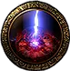
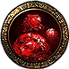
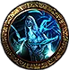
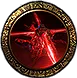

Ogni piano ti offre tre modificatori e te ne fa scegliere uno, e quello scelto resta per tutta la run. Questa pagina è l’elenco completo — 42 famiglie, 122 gradi col testo esatto del gioco — e per ognuna il motivo per cui cliccarlo o lasciarlo. 🔴 Il punto delicato non è l’elenco: è che «gratis» e «da evitare» dipendono dalla build, e chi copia il verdetto senza la condizione copia la parte sbagliata.
patch 0.5.5lega Forbidden Ritespoe2db letto il 9 settembre 2026122 gradi · 42 famiglie
🔴 Due fonti, e non hanno lo stesso peso. I numeri e i testi dei
modificatori vengono da poe2db,
letti il 9 settembre 2026: sono dati del gioco. I giudizi «clicca / non
cliccare» vengono in gran parte da un
video di 787prada pubblicato lo stesso giorno, e sono l’opinione di
un giocatore su una build precisa: un Martial Artist monk a
danno fisico puro, che vive di energy shield, non è ancora CI, non
ha evasion e stunna i boss per potersi fermare a colpire. Ogni volta che
il video dice «gratis», quella build è la condizione nascosta. Su ogni riga
di questa pagina il simbolo dice da dove viene.
🎥Giudizio del video — opinione, non misura. Vale per quella build.
✅Dato verificato — letto su poe2db, sul trade2 o su poe.ninja, con la data.
🧮Lettura del testo — ragionamento sul testo del mod. Non misurato, non del video.
⚠️Conflitto — il video e il dato dicono cose diverse, e lo dichiaro.
Come funziona, in sei righe
La struttura
Si entra con un Inscribed Ultimatum, che dichiara sopra il livello dell’area e il numero di stanze. Ogni stanza, prima di entrare, offre tre modificatori: se ne clicca uno, e quello resta addosso per il resto della run. Nelle stanze successive lo stesso mod può essere riofferto a un grado più alto.
✅ Le stanze scalano col livello dell’area, e i tre scalini sono 4 (livello 1), 7 (livello 60) e 10 (livello 75) — tabella Trial Length di poe2db.
L’endgame: 30 piani, tre boss
🎥 Al 10°, al 20° e al 30° piano c’è un boss e la scelta «prendi le ricompense o continua». I tre Fate — Cowardly, Deadly, Victorious — decidono quale boss trovi quando: secondo il video il Victorious garantisce il boss-uccello al 30° piano, cioè col carico di mod più alto, e per questo è il più difficile. Non verificato qui.
⚠️ Il testo su poe2db parla ancora di «fino a dieci stanze con tre boss»: è la forma precedente. Quale delle due valga in gioco qui non è misurato.
Ruin — la barra che ti squalifica
✅ Alcuni mod non ti fanno danno: ti danno Ruin. E il numero è secco, dalla voce Ruin di poe2db: «On reaching 7 Ruin, you will fail the Trials».
Sette. Non è una morte, è una squalifica — e i due mod che la producono (Stalking Shade e Wager of Ruin) sono gli unici che non si valutano guardando la vita.
Le tre leve che cambiano tutte le scelte
Prima dell’elenco, tre cose che valgono su ogni riga. La prima è una regola di aritmetica che rende sbagliata l’intuizione più comune; le altre due sono bug, e quindi hanno una scadenza.
1 · Il grado sostituisce, non somma
🎥 Ogni offerta mostra la rarità che aggiunge. Se Lethal Rare Monsters a grado 1 dice «12 rarità» e a grado 5 dice «22», portarlo su non ti dà 34: ti dà 22 invece di 12, cioè +10.
La conseguenza pratica è l’opposto dell’intuizione: spesso conviene prendere un mod nuovo e facile invece di alzare quello che hai già, perché il mod nuovo porta la sua rarità per intero. Vale finché il personaggio è abbastanza forte da non curarsi di avere più righe addosso — ed è il motivo per cui questa pagina ha una colonna «Libero» così lunga: serve un serbatoio di mod innocui da cliccare.
2 · Il reset al checkpoint salta il corridoio
🎥 Quando in basso compare «room completed», invece di prendere l’ascensore e attraversare il corridoio si mette in pausa e si fa reset al checkpoint: si riparte direttamente davanti alla scelta dei tre mod del piano dopo. Su una build lenta, o su una stanza «uccidi tutti» dove il percorso ti fa tornare indietro, è il risparmio di tempo più grosso del contenuto.
⚠️ Ed è lo stesso pulsante che ti salva la vita. Nella stanza del boss, se stai per morire, il reset ti tira fuori — ma il video avverte che resta circa un secondo in cui prendi ancora danno: se vuoi essere sicuro, si esce dal gioco invece di resettare. Uscire dal trial non costa l’ultimatum.
🔴 Ha una scadenza. Lo dice l’autore stesso: «non mi aspetto che resti nel gioco». Metà dei «gratis» di questa pagina — Drought in testa — poggia su questo pulsante.
3 · Due cose che il gioco non ti mostra
🎥 Alla scelta «prendi o continua» del 10°, 20° e 30° piano le ricompense in sospeso non si vedono — il video le ha viste una volta sola in tutta la lega. Quindi si guarda la finestra prima di entrare dal boss: è quel numero che decide se continuare o incassare.
🎥 E il pannello a comparsa laterale, quello che in mappa elenca i modificatori attivi, non si aggiorna: non è un posto dove controllare cosa hai addosso.
I 33 modificatori, uno per uno
Tre corsie, e la posizione è il verdetto: Liberi, poi Dipende dalla build, poi Evita — affiancate su schermo largo, una sotto l’altra su schermo stretto. In fondo, fuori dalle corsie, gli 8 che il video non giudica — dove trovi solo la lettura del testo, marcata come tale. Il pulsante sotto il nome apre il testo esatto di ogni grado.
33 modificatori
Liberi 9
Volatile Fiends
Il primo click di ogni run — finché dura
Libero5 gradi — il testo in gioco
T1
Monsters have a 10% chance to release deadly Volatiles on death. Rare monsters leave larger ones
T2
Monsters have a 20% chance to release deadly Volatiles on death. Rare monsters leave larger ones
T3
Monsters have a 30% chance to release deadly Volatiles on death. Rare monsters leave larger ones
T4
Monsters have a 40% chance to release deadly Volatiles on death. Rare monsters leave larger ones
T5
Monsters have a 50% chance to release deadly Volatiles on death. Rare monsters leave larger ones
Perché sì🎥
È rotto: le volatili scoppiano all'istante e non fanno danno. Il video lo prende ogni volta, fino a T5, e lo chiama «un regalo». Prima della lega lo stesso autore lo dava come «non cliccare mai, in nessuna circostanza».
Perché no🧮
Ed è esattamente per questo che è la riga più fragile della pagina: è un bug, non un bilanciamento. Il giorno che lo sistemano, a T5 metà dei mostri lascia una volatile mortale morendo e i rari ne lasciano di più grosse — cioè torna a essere il peggiore di tutti. Non si costruisce una run su questo senza aver visto una volatile esplodere.
Toxic Monsters
Portato a 5 ogni run
Libero5 gradi — il testo in gioco
T1
Monsters have 10% chance to inflict Bleed or Poison
T2
Monsters have 20% chance to inflict Bleed or Poison
T3
Monsters have 30% chance to inflict Bleed or Poison
T4
Monsters have 40% chance to inflict Bleed or Poison
T5
Monsters have 50% chance to inflict Bleed or Poison
Perché sì🎥
«Una barzelletta, lo porto a cinque praticamente ogni run, totalmente gratis»: i mostri del trial non picchiano abbastanza forte perché uno stack di sanguinamento o veleno conti qualcosa.
Perché no🧮
È l'unica riga della lista che scala col numero di colpi che prendi e non con il loro danno: a T5 è il 50% di probabilità su ogni colpo. Su vita bassa e senza rimedio a bleed il conto cambia — e il giudizio sopra è misurato su un personaggio da 2.000 di energy shield, non sul tuo.

Stormcaller Runes
«Uno dei più liberi del gioco»
Libero3 gradi — il testo in gioco
T1
Runes will appear that will call deadly Lightning storms if you remain in them
T3
Large runes will appear that will call deadly Lightning storms if you remain in them
T5
Many large runes will appear that will call deadly Lightning storms if you remain in them
Perché sì🎥
Parole esatte: «probabilmente uno dei più gratis che esistano». Sono rune disegnate a terra: fanno male solo se ci resti sopra.
Perché no🧮
«Solo se ci resti sopra» è precisamente il problema di una build che si inchioda durante un'animazione — la stessa obiezione che il video muove a Petrification Statues, dove però la considera fatale invece che trascurabile.

Blood Globules
Si disinnesca camminando
Libero2 gradi — il testo in gioco
T1
Globules of blood manifest nearby, tracking you. When above you they will fall, dealing Physical damage
T2
Globules of blood manifest nearby, tracking you. When above you they will fall, dealing Physical damage and creating damaging blood ground
Perché sì🎥
La globula ha traiettoria fissa: prende la strada più breve verso di te. Le si va incontro per metà strada e poi si cammina via — «così non ti prende mai». La pozza che lascia a terra fa danno trascurabile.
Perché no🧮
La tecnica richiede di vederla arrivare. Su una stanza già coperta di ostacoli — e T2 aggiunge il terreno di sangue — vale meno di quanto la spiegazione faccia sembrare.
Vaal Omnitect
Preso ogni volta, anche per il gusto
Libero3 gradi — il testo in gioco
T1
An ancient Vaal machination will deploy attacks against nearby intruders
T3
An ancient Vaal machination will deploy an array of attacks against nearby intruders
T5
An ancient Vaal machination will deploy a powerful array of attacks against nearby intruders
Perché sì🎥
«Lo prendo ogni volta»: a grado alto la macchina si ritrova con delle torrette di fuoco addosso, «che non ti ammazzano e fanno ridere».
Perché no🧮
Resta un'entità che spara mentre combatti: costa secondi nella stanza, e i secondi nella stanza sono la valuta vera del trial.
Drought
Gratis per un motivo che non sta nel mod
Libero5 gradi — il testo in gioco
T1
Monsters grant 20% reduced Flask and Charm Charges on death
T2
Monsters grant 40% reduced Flask and Charm Charges on death
T3
Monsters grant 60% reduced Flask and Charm Charges on death
T4
Monsters grant 80% reduced Flask and Charm Charges on death
T5
Monsters grant no Flask and Charm Charges on death
Perché sì🎥
È gratis adesso, e non perché il mod sia debole: perché fra un piano e l'altro si fa reset al checkpoint, e se finisci le cariche e stai per morire esci dal trial senza perdere l'ultimatum.
Perché no✅
A T5 i mostri non danno nessuna carica, né di flask né di charm. Una build che vive di flask — rigenerazione su carica, immunità comprate col flask — perde la sua unica valvola, e l'uscita dal trial ripaga l'ultimatum, non i venti minuti.
Escalating Damage Taken
Il tetto è +50% e si azzera a ogni stanza
Libero3 gradi — il testo in gioco
T1
In each encounter room, damage taken will increase by 1% every 2.5 seconds, up to 50%
T3
In each encounter room, damage taken will increase by 1% every 1.75 seconds, up to 50%
T5
In each encounter room, damage taken will increase by 1% every second, up to 50%
Perché sì🎥
Messo nella stessa frase di Drought: «anche questo è gratis».
Perché no🧮
Il perché non lo dice, ma sta nel testo: il tetto è +50% e riparte a ogni stanza. Su una stanza chiusa in venti secondi paghi una frazione di quel 50%; sulla stanza «uccidi tutti» lenta, o su quella a timer, il tetto lo raggiungi — a T5 in cinquanta secondi.
Lethal Rare Monsters
Non è una tassa: è un buff
Libero3 gradi — il testo in gioco
T1
30% increased Rare Monsters
T3
60% increased Rare Monsters
T5
Rare Monsters have an additional Modifier · 100% increased Rare Monsters
Perché sì🎥
«È solo un buff»: più rari, e a T5 i rari hanno un modificatore in più — cioè più roba a terra, che è il motivo per cui si entra.
Perché no🧮
Più rari vuol dire anche più corpi che lasciano volatili se hai preso Volatile Fiends, e più bersagli che il boss non è. È un buff se la build pulisce i rari senza fermarsi.
Time Paradox
Freebie — con un divieto secco
Libero3 gradi — il testo in gioco
T1
Buffs on you expire 50% faster and Debuffs on you expire 25% slower
T3
Buffs on you expire 100% faster and Debuffs on you expire 50% slower
T5
Buffs on you expire 200% faster and Debuffs on you expire 100% slower
Perché sì🎥
«Freebie, lo prendo comunque»: tre soli gradi, e il video lo clicca a occhi chiusi.
Perché no✅
🔴 Mai insieme a Petrification Statues. A T5 i debuff su di te scadono il 100% più lentamente, e la pietrificazione è un debuff: il video la chiama morte certa, «non mi interessa quanto pensi di essere tanky». Il legame fra i due testi lo conferma.
Da sapere🧮
E c'è un secondo caso che il video non nomina, perché la sua build non ne vive: a T5 i buff su di te scadono il 200% più in fretta. Una build costruita su buff a scadenza — cariche, buff da skill, finestre temporanee — qui non ha un mod gratis, ha un mod che la spegne.
Dipende dalla build 8
?
Prismatic Monsters
Gratis a cap di resistenze, letale sotto
Dipende5 gradi — il testo in gioco
T1
Monsters gain 10% of Damage as Extra Damage of a random Element
T2
Monsters gain 15% of Damage as Extra Damage of a random Element
T3
Monsters gain 20% of Damage as Extra Damage of a random Element
T4
Monsters gain 25% of Damage as Extra Damage of a random Element
T5
Monsters gain 30% of Damage as Extra Damage of a random Element
Perché sì🎥
«Praticamente gratis, è solo un 1,3×»: a T5 i mostri guadagnano il 30% del danno come danno extra di un elemento casuale.
Perché no🎥
«Se non sei a cap di resistenze ti termina» — e combinato con Reduced Resistances «vieni distrutto». È il mod che trasforma un buco nelle resistenze in una morte, invece di lasciarlo essere un buco.
Resistant Monsters
Nullo sul fisico, un buff con Rakiata's Flow
Dipende5 gradi — il testo in gioco
T1
Monsters have +10% to all Resistances
T2
Monsters have +20% to all Resistances
T3
Monsters have +30% to all Resistances
T4
Monsters have +40% to all Resistances
T5
Monsters have +50% to all Resistances
Perché sì🎥
Portato a 5 ogni run, perché quella build fa danno fisico puro: +50% a tutte le resistenze su un danno che non è né elementale né da caos non toglie niente.
Perché sì✅
✅ E c'è il caso in cui è un buff vero. Rakiata's Flow (Lineage Support, livello 65, moltiplicatore di costo 120%) fa sì che i colpi trattino le resistenze elementali del mostro come invertite — testo letto su poe2db il 9 settembre 2026. Con quella gemma socketata, +50% diventa −50%: il mod si clicca per fare più danno.
Perché no🧮
Qualsiasi build elementale senza quella gemma perde danno secco, a T5 su cinquanta punti di resistenza.
Shielding Monsters
Libero, tranne per i colpi preparati
Dipende5 gradi — il testo in gioco
T1
Monsters gain 10% of maximum Life as Extra maximum Energy Shield
T2
Monsters gain 20% of maximum Life as Extra maximum Energy Shield
T3
Monsters gain 30% of maximum Life as Extra maximum Energy Shield
T4
Monsters gain 40% of maximum Life as Extra maximum Energy Shield
T5
Monsters gain 50% of maximum Life as Extra maximum Energy Shield
Perché sì🎥
«Gratis per la maggior parte»: se fai danno da caos «lo scudo lo sfondi comunque».
Perché no🎥
Se il piano è un colpo secco preparato — un Perfect Strike, una finestra da caricare — a T5 il 50% della vita massima in energy shield extra si mette esattamente in mezzo alla soglia che devi superare.
Unstoppable Monsters
Libero per i caster, rosso per chi stunna
Dipende3 gradi — il testo in gioco
T1
Monsters have 30% reduced Slowing Potency of Debuffs on them and 30% increased Stun Threshold
T3
Monsters have 50% reduced Slowing Potency of Debuffs on them and 50% increased Stun Threshold
T5
Monsters have 75% reduced Slowing Potency of Debuffs on them and 75% increased Stun Threshold
Perché sì🎥
«Sarà gratis per la maggior parte di voi, soprattutto se siete caster».
Perché no🎥
Il video però lo evita, e la ragione vale più del giudizio: la sua build stunna i boss per potersi permettere di stare ferma a usare la skill. A T5 la soglia di stun è +75% e i rallentamenti valgono il 25% di quello che dicono. Se la tua sopravvivenza passa da stun, freeze o slow, questa riga sta in lista rossa, non gialla.
Deadly Monsters
T1 sì, T5 no — salvo due eccezioni
Dipende5 gradi — il testo in gioco
T1
Monsters have 100% increased Critical Hit Chance
T2
Monsters have 200% increased Critical Hit Chance
T3
Monsters have 300% increased Critical Hit Chance
T4
Monsters have 400% increased Critical Hit Chance
T5
Monsters have 500% increased Critical Hit Chance
Perché sì🎥
T1 si clicca senza pensarci. Oltre no: «non portarlo su come se fosse un regalo».
Perché sì🎥
Diventa gratis a ogni grado in due casi precisi, entrambi dal video e non verificati qui: con Ward (sulla Brass Dome non prendi il bonus di danno critico) e da Gemling, che ne è immune.
Perché no✅
A T5 sono +500% di probabilità di colpo critico. Non aumenta il danno medio del mostro: aumenta la coda, cioè la probabilità del colpo che ti uccide.
Monster Speed
Innocuo nelle stanze, brutto sul boss
Dipende3 gradi — il testo in gioco
T1
Monsters gain 10% increased Skill Speed and Movement Speed
T3
Monsters gain 15% increased Skill Speed and Movement Speed
T5
Monsters gain 20% increased Skill Speed and Movement Speed
Perché sì🎥
«Non è così male»: tre gradi, dal +10% al +20% di velocità di skill e movimento.
Perché no🎥
La riserva è pesante e sta tutta nella stanza del boss: già a T1 non riesci più a schivare con la capriola l'attacco di calcio del boss-uccello, «perché attacca in successione e ti rincorre come se giocassi a Dark Souls». Il costo non è nelle stanze, è nei tre incontri che contano.
Reduced Recovery
Dipende da una cosa sola: se recuperi in combattimento
Dipende5 gradi — il testo in gioco
T1
20% reduced Life, Mana, and Energy Shield Recovery Rate
T2
35% reduced Life, Mana, and Energy Shield Recovery Rate
T3
50% reduced Life, Mana, and Energy Shield Recovery Rate
T4
65% reduced Life, Mana, and Energy Shield Recovery Rate
T5
80% reduced Life, Mana, and Energy Shield Recovery Rate
Perché no🎥
Da evitare se dipendi dalla rigenerazione per usare la skill, o dai flask per stare in piedi: a T5 è −80% al rateo di recupero di vita, mana ed energy shield insieme. «Se ti tocca cliccarlo, spera almeno di non doverlo portare su.»
Perché sì🧮
Una build che non spende mana per attaccare e non recupera durante il combattimento — danno secco, nessun leech, riserva parcheggiata — la sente appena. È l'unico mod della lista il cui costo si può portare a zero cambiando build, non equipaggiamento.

Stalking Shade
Il meno brutto fra quelli da evitare
Dipende3 gradi — il testo in gioco
T1 · T2 · T3
An invulnerable shade stalks you, inflicting Ruin with its hits, it gains additional skills at higher tiers
Perché no🎥
L'ombra è invulnerabile, ti segue per tutto il trial e i suoi colpi danno Ruin. Il video: «l'ho visto più lento di prima, a grado 1 è quasi gratis», ma a grado alto prende anche un attacco a proiettile «e a quel punto ti condiziona il movimento». Lo chiama «il meno brutto di quelli da evitare».
Da sapere✅
✅ Il numero che manca al giudizio sta su poe2db, alla voce Ruin: «On reaching 7 Ruin, you will fail the Trials». Sette colpi e la run è persa — il video dice sette, il dato lo conferma. Non è un mod che ti uccide: è un mod che ti squalifica, e una barra che non si vede finisce sempre per essere quella dimenticata.
Evita 8
Reduced Resistances
Uno dei due peggiori — per il massimale, non per il resto
Evita5 gradi — il testo in gioco
T1
-15% to Elemental Resistances
T2
-25% to Elemental Resistances
T3
-35% to Elemental Resistances and -5% to Maximum Elemental Resistances
T4
-45% to Elemental Resistances and -10% to Maximum Elemental Resistances
T5
-55% to Elemental Resistances and -15% to Maximum Elemental Resistances
Perché no🎥
Il video lo mette fra i due peggiori della lista: «meno 55 a tutte le resistenze è terribile, e vuol dire che certe cose ti uccidono in un colpo».
Perché no✅
E la parte che si legge male non è il −55%: è il −15% al massimale, che compare da T3. Il massimale è il tetto: abbassato, non lo ricompri con l'equipaggiamento durante la run. Un buco nelle resistenze qui è permanente per tutti i piani che restano.
Damaged Defences
Colpisce tutte e tre le difese insieme
Evita5 gradi — il testo in gioco
T1
20% less Armour, Evasion and Energy Shield
T2
35% less Armour, Evasion and Energy Shield
T3
50% less Armour, Evasion and Energy Shield
T4
65% less Armour, Evasion and Energy Shield
T5
80% less Armour, Evasion and Energy Shield
Perché no🎥
Evitato «perché io sto usando una difesa». Diventa gratis solo con Ward, che non è né armour, né evasion, né energy shield.
Perché no✅
A T5 è −80% ad armour, evasion ed energy shield nella stessa riga: non esiste ibrido che lo aggiri spostando il peso su un'altra difesa.
Lessened Reach
Non è comodità: è danno
Evita5 gradi — il testo in gioco
T1
20% less Area of Effect and Projectile Speed
T2
35% less Area of Effect and Projectile Speed
T3
50% less Area of Effect and Projectile Speed
T4
65% less Area of Effect and Projectile Speed
T5
80% less Area of Effect and Projectile Speed
Perché no🎥
Sulla build del video toglie danno, non raggio: le copie che tornano a colpire hanno molta meno probabilità di arrivare. «Ti taglia il danno in modo grave.»
Perché no✅
E il testo dice due cose in una riga: a T5 è −80% ad area d'effettoe a velocità dei proiettili. Chi vive di proiettili la paga come chi vive di area, e non è ovvio leggendo il nome.
Perché sì🧮
Una build monobersaglio, corpo a corpo, senza proiettili e senza aree, la sente poco. Sono poche.
Chaotic Monsters
«Come la peste» — finché non sei CI
Evita5 gradi — il testo in gioco
T1
Monsters gain 5% of Damage as Extra Chaos Damage
T2
Monsters gain 11% of Damage as Extra Chaos Damage
T3
Monsters gain 17% of Damage as Extra Chaos Damage
T4
Monsters gain 23% of Damage as Extra Chaos Damage
T5
Monsters gain 29% of Damage as Extra Chaos Damage
Perché no🎥
«Lo evito come la peste», e la ragione è una sola: non è ancora CI (Chaos Inoculation). Il piano dichiarato è passare a CI e a quel punto «cliccare tutti i regali».
Da sapere✅
A T5, +29% del danno come danno extra da caos. ⚠️ Come il caos interagisca con l'energy shield in questo gioco non è misurato qui, ed è esattamente il punto dove la memoria dell'altro Path of Exile risponde con sicurezza e sbaglia. Qui vale solo la constatazione: chi ha CI lo clicca, chi non l'ha lo lascia.
Perché sì🎥
📌 E attenzione a non confonderlo con Toxic Monsters, che il video porta a 5 ogni volta: «i mostri tossici sono senza sforzo, i mostri caotici non li clicco».
Enraged Bosses
Il costo è tempo nella stanza sbagliata
Evita3 gradi — il testo in gioco
T1
Bosses have 30% increased Toughness and 10% increased Damage
T3
Bosses have 60% increased Toughness and 20% increased Damage
T5
Bosses have 100% increased Toughness and 30% increased Damage
Perché no🎥
«Non mi interessa che facciano più danno: mi interessa che il boss muore più tardi, e nel frattempo il pavimento è coperto di trappole.» A T5 i boss hanno +100% di robustezza e +30% di danno.
Da sapere🧮
È la regola generale del trial detta su un mod solo: tutti gli altri modificatori che hai preso girano nella stanza del boss. Allungare quella stanza li moltiplica tutti.
Impending Doom
Il salto T1→T2 cancella il posto sicuro
Evita2 gradi — il testo in gioco
T1
Rings of Doom appear on the ground which grow over time, exploding for Physical damage once they reach a maximum area
T2
Rings and circles of Doom appear on the ground which grow over time, exploding for Physical damage once they reach a maximum area
Perché no🎥
Circa mille di danno per esplosione: con l'armour si prende in faccia. Il rischio vero non è il danno, è lo stun che ne segue — «e quello sì che ti ammazza». Con Unwavering Stance il video non se ne accorge nemmeno.
Perché no🎥
🔴 La riga da leggere è il salto di grado. A T1 l'anello è una ciambella e il buco in mezzo è il posto sicuro; a T2 il buco non c'è più e la stanza del boss è tutta coperta: «o lo uccidi prima che scoppi, o corri al bordo».
Da sapere⚠️
⚠️ Qui il video e il dato non dicono la stessa cosa. Il video parla di «mille danni da caos»; il testo su poe2db dice danno fisico. E la sua stessa raccomandazione — «con l'armour lo tanki» — funziona solo col fisico. Vale il dato.

Pyramid Beams
Rosso, ma si compra la contromisura
Evita2 gradi — il testo in gioco
T1
Pyramid objects appear, projecting four rotating lasers that inflict Corrupted Blood on Hit
T2
Pyramid objects appear, projecting four fast rotating lasers that inflict Corrupted Blood on Hit
Perché no🎥
Evitato perché «condiziona come giochi», non perché uccida: i laser infliggono Corrupted Blood. T2 li fa girare più in fretta.
Perché sì🎥
🔑 Ed è l'unico mod della lista con una contromisura che si compra. Un jewel con l'incantesimo «Corrupted Blood cannot be inflicted on you» rende il mod gratis. Sul trade quelli già fatti costano molto; il video consiglia di slammare jewel magici — dice ~1 su 30 — e di non corrompere i propri jewel, «probabilità terribili». Nessuno di questi due numeri è misurato qui.
Da sapere🧮
Senza il jewel resta comunque il rimedio povero: il Corrupted Blood si spegne col flask, a costo di spendere le cariche — cioè a costo di aver preso Drought.
Petrification Statues
Il peggiore, e la vecchia scappatoia non c'è più
Evita3 gradi — il testo in gioco
T1 · T3 · T5
Challenge area contains several statues that Petrify you if you stand within their gaze for a duration
Perché no🎥
«Evitalo come la peste.» E la scappatoia che l'autore stesso consigliava in un video precedente — prendere le torrette di fuoco e fulmine per escludere le statue dal pool — non funziona più: «hanno cambiato come funzionano, ora possono uscire insieme».
Perché no✅
🔴 E con Time Paradox addosso è la combinazione che il video dichiara letale: «non mi interessa quanto tanky pensi di essere, muori» — circondato e fermo sullo schermo per una decina di secondi. Il legame lo conferma il testo dell'altro mod: a T5 i debuff su di te scadono il 100% più lentamente, e la pietrificazione è un debuff.
Da sapere✅
⚠️ Su poe2db i tre gradi hanno il testo identico: cosa cresca col grado — numero di statue, raggio dello sguardo, durata — dal dato non si legge.
Non giudicati — solo la lettura del testo 8
Burning Turrets
Il video non le giudica: dice solo che il trucco è morto
Non giudicato3 gradi — il testo in gioco
T1
Challenge area contains Fire turrets that will periodically fire Projectiles ahead
T3
Challenge area contains more Fire turrets that will periodically fire Projectiles ahead
T5
Challenge area contains even more Fire turrets that will periodically fire Projectiles ahead
Da sapere🎥
Compaiono nel video per un motivo solo: dire che il vecchio consiglio «prendi le torrette e le statue non ti escono» non vale più. Un giudizio sul mod in sé non c'è.
Perché sì🧮
Dal testo: torrette che sparano proiettili in avanti, periodicamente, in numero crescente col grado. Sono ostacoli statici e prevedibili — costano posizionamento, non vita.
Perché no🧮
A meno che la build resti bloccata in un'animazione: allora «statico e prevedibile» significa che sai in anticipo cosa ti colpirà.
Shocking Turrets
Stessa cosa delle torrette di fuoco
Non giudicato3 gradi — il testo in gioco
T1
Challenge area contains Lightning turrets that will periodically fire Projectiles ahead
T3
Challenge area contains more Lightning turrets that will periodically fire Projectiles ahead
T5
Challenge area contains even more Lightning turrets that will periodically fire Projectiles ahead
Da sapere🎥
Nominate solo dentro lo stesso discorso sulle statue. Nessun giudizio.
Perché sì🧮
Testo identico a Burning Turrets col fulmine al posto del fuoco, e stessi tre gradi. Valgono le stesse considerazioni — con l'aggiunta che il fulmine ha la varianza più alta dei tre elementi, quindi il colpo peggiore è più lontano dalla media.
Temple Traps
Tassa sul movimento
Non giudicato2 gradi — il testo in gioco
T1
Challenge area contains spikes that deal Physical damage to those who step on them
T2
Challenge area contains many spikes that deal Physical damage to those who step on them
Da sapere🎥
Non trattato.
Perché sì🧮
Spine a terra che fanno danno fisico a chi ci cammina sopra; a T2 «molte». Statiche e visibili: è una tassa sul movimento, non una minaccia.
Perché no🧮
Diventa una minaccia solo insieme a qualcosa che ti muove senza che tu decida — un rallentamento, uno stun, una capriola forzata.
Random Projectiles
Un grado solo, e per metà delle build è la fine
Non giudicato1 grado — il testo in gioco
T1
Your Projectiles fly in random directions
Da sapere🎥
Non nominato: la build del video non usa proiettili.
Perché no✅
🔴 Un grado solo, e senza sfumature: «i tuoi proiettili volano in direzioni casuali». Per una build a proiettili non è una tassa: è la fine del danno per il resto del trial, e non c'è un grado 1 da cui salvarsi.
Perché sì🧮
Per tutte le altre è il click più gratuito dell'intera lista — più gratuito di quelli che il video chiama gratis, perché non ha nemmeno un caso limite.
Occasional Impotence
Il 25% del tempo a zero danno, per sempre
Non giudicato1 grado — il testo in gioco
T2
You and your Minions deal no damage for 2 seconds every 8 seconds
Da sapere🎥
Non trattato.
Perché no✅
Un grado solo: tu e i tuoi minion non fate danno per 2 secondi ogni 8. Cioè il 25% del tempo a danno zero, per tutti i piani che restano. Non ti uccide: allunga tutto — e nel trial è il tempo che uccide, perché tutti gli altri mod girano mentre aspetti.
Da sapere✅
⚠️ Su poe2db questa famiglia ha una voce sola, etichettata però «Tier 2»: se esista un grado 1 che il dato non mostra, non è verificato.
Blood Mist
Non ti fa male: ti impedisce di uccidere
Non giudicato1 grado — il testo in gioco
T1
Challenge area is enshrouded by a blood mist which makes monsters within it immune to damage
Da sapere🎥
Non trattato.
Perché no✅
Un grado solo, e cambia la regola della stanza invece dei numeri: la nebbia rende immuni al danno i mostri che ci stanno dentro. È l'unico mod della lista che non ti minaccia e ti costa comunque la run, se la stanza è quella a timer.
Da sapere🧮
Su una stanza «uccidi tutti» è tempo e pazienza: i mostri vanno tirati fuori dalla nebbia.
Entangling Monsters
Il video dice che non esce più; poe2db lo elenca
Non giudicato1 grado — il testo in gioco
T1
Monsters inflict Grasping Vines on Hit
Da sapere⚠️
⚠️ Conflitto aperto. Il video: «non credo sia più nel pool, non l'ho visto per tutta la lega». poe2db lo elenca ancora, con un grado solo: i mostri infliggono Grasping Vines colpendo. Chi dei due abbia ragione qui non è misurato — e la differenza non è accademica: se esce e non te l'aspetti, è un rallentamento.
Heart Tethers
Idem — ma il testo è più cattivo di quanto sembri
Non giudicato3 gradi — il testo in gioco
T1
Bloody hearts appear that apply tethers, Slowing you for 3 seconds. Breaking the tether will Stun you and cause you to take 5% increased damage for 3 seconds
T3
Bloody hearts appear that apply tethers, Slowing you for 4 seconds. Breaking the tether will Stun you and cause you to take 10% increased damage for 4 seconds
T5
Bloody hearts appear that apply tethers, Slowing you for 5 seconds. Breaking the tether will Stun you and cause you to take 15% increased damage for 5 seconds
Da sapere⚠️
⚠️ Stesso conflitto: «non ho visto nemmeno gli heart tether» in tutta la lega, mentre poe2db li elenca con tre gradi.
Perché no✅
E vale leggerlo, nel caso escano: cuori che ti legano rallentandoti 3-5 secondi, e rompere il legame ti stunna facendoti prendere il 5-15% di danno in più. Rallentamento più stun nella stanza del boss è la coppia che uccide — la stessa che rende Impending Doom pericoloso.
I 9 wager — dove si compra la ricompensa
I wager non sono afflizioni: sono scambi. Invece di peggiorare la run, alzano di grado i mod che hai già e in cambio gonfiano le ricompense. 🔑 E occupano il posto di un modificatore: è il motivo per cui il video clicca anche un wager che chiama «spazzatura» — il premio vero è non aver preso un debuff.
⚠️ Di questi nove poe2db non ha l’icona, e non l’ho inventata: nel suo
HTML il posto dell’immagine è vuoto. Dove manca c’è un ? al posto
dell’icona — qui e su Prismatic Monsters,
l’unica afflizione nelle stesse condizioni. Sono 10 caselle su 42.
Liberi 4
?
Wager of the Present
«Quello che stai cercando»
Libero1 grado — il testo in gioco
T1
All previously chosen Modifiers gain +1 Tier · All pending Currency Item Rewards are Doubled
Perché sì🎥
Parole esatte: «è quello che stai cercando». Raddoppia tutte le ricompense in valuta già in sospeso. Ideale all'ultimo piano: raddoppi la finestra piena e il +1 grado ai mod non ha più piani per farti male.
Perché sì🎥
Ed è quasi gratis anche presto, quando hai pochi mod da alzare — ma allora non c'è quasi niente da raddoppiare. Se lo lasci passare può essere riofferto: il video l'ha visto ricomparire al piano 20 dopo averlo rifiutato al 2.
Perché no🧮
Il costo cresce con quanti mod hai già addosso, non col grado: a metà run è la riga più cara del gruppo.
?
Wager of the Future
Ottimo — ma il costo cresce coi piani che restano
Libero1 grado — il testo in gioco
T1
All offered Modifiers gain +1 Tier · All offered Currency Item Rewards have their Stack Size Doubled
Perché sì🎥
«Ovviamente è pazzesco, non c'è nemmeno da spiegarlo»: tutte le ricompense in valuta offerte hanno lo stack raddoppiato.
Perché no🧮
La differenza con Present è tutta nella parola «offerte»: qui il +1 grado colpisce ciò che ti verrà proposto da qui in avanti. Preso presto è un moltiplicatore su tutta la run e un peggioramento su tutta la run — l'esatto contrario di Present, che si prende tardi.
?
Wager of Upgrades
Il +1 allo stack, stanza dopo stanza
Libero1 grado — il testo in gioco
T1
When any offered Modifier is chosen, a previously chosen Modifier also gains +1 Tier · When a Room is Completed, a pending Currency Item or Soul Core Reward gains +1 to its Stack Size
Perché sì🎥
«Molto bello»: a ogni stanza completata, una valuta o un soul core in sospeso guadagna +1 allo stack. «Se becca la tua divine, sei contento.»
Perché no🧮
Il costo è composto: ogni scelta successiva alza anche un mod vecchio. Preso all'ultimo piano è quasi gratis; preso al secondo è la cosa più cara di tutta la pagina.
?
Wager of Chaos
L'unico che aggiunge ricompense invece di gonfiarle
Libero2 gradi — il testo in gioco
T1
Upgrade 2 previously chosen Modifiers · All Rooms offer an additional Reward
T1
Upgrade all previously chosen Modifiers · All Rooms offer 2 additional Rewards
Perché sì✅
Due versioni: la prima alza 2 mod già scelti e fa offrire a tutte le stanze una ricompensa in più; la seconda alza tutti i mod già scelti e ne fa offrire due.
Perché sì🧮
È l'unico wager che aumenta il numero delle ricompense invece del loro valore: paga tanto più quanti più piani ti restano. Si prende presto — esattamente al contrario di Present.
Da sapere🎥
Raro: il video l'ha visto una volta sola in tre giorni di run continuate.
Dipende dalla build 2
?
Wager of Rerolling
Si clicca per quello che non ti fa prendere
Dipende2 gradi — il testo in gioco
T1
Upgrade 2 previously chosen Modifiers · All pending Currency Item Rewards are Rerolled
T1
Upgrade 2 previously chosen Modifiers · All pending Soul Core Rewards are Rerolled
Perché sì🎥
Versione valuta: «è ottimo se non hai niente di buono in finestra — se non ho una divine lo premo quasi sempre. Se ho una divine, non vale».
Perché no🎥
Versione soul core: «questa è spazzatura. La clicco perché almeno così non prendo un debuff, ma non la aspetto con piacere».
Da sapere🧮
🔑 E qui c'è la regola che vale per tutti i wager: occupano il posto di un modificatore. Un wager mediocre batte comunque un'afflizione, perché il vero premio è non aver preso il debuff — ed è il motivo per cui il video clicca una cosa che chiama spazzatura.
?
Wager of Danger
Grado massimo dove fa più male
Dipende1 grado — il testo in gioco
T1
Modifiers offered at Boss Rooms are offered at their Maximum Tier · Boss Rooms offer an additional Reward
Da sapere🎥
«Non so se l'ho mai visto»: assieme a Chaos, il video lo dà per uno dei due più rari.
Perché no✅
I mod offerti nelle stanze dei boss arrivano al grado massimo. È precisamente il punto in cui il trial fa male, e nessuno dei giudizi «T1 sì, T5 no» di questa pagina sopravvive lì dentro.
Perché sì🧮
In cambio le stanze dei boss offrono una ricompensa in più. È un wager per una build che uccide i boss in pochi secondi — cioè per chi non entra mai davvero nella parte cattiva del testo.
Evita 3
?
Wager of Mystery
Ti toglie l'unica leva che hai
Evita1 grado — il testo in gioco
T1
All offered Modifiers are Hidden · All offered Rewards are Lucky
Perché no🎥
«Non cliccarlo in nessuna circostanza» se la build ha uno dei problemi elencati sopra. Il motivo è semplice: non vedi cosa stai scegliendo, tre punti di domanda. «Se il tuo personaggio è Thanos può andare; se il tuo personaggio può morire nel trial, io non lo cliccherei mai.»
Perché sì🎥
In cambio, tutte le ricompense offerte sono Lucky: vengono tirate due volte e tieni la migliore delle due — «invece di un exalted può uscirti un greater exalted, o un annullamento».
Da sapere🧮
Il costo, detto in astratto: in questo contenuto l'unica leva che hai è scegliere il male minore. Mystery la spegne. Tutto il resto di questa pagina serve a scegliere; questo mod rende inutile averla letta.
?
Wager of Rarity
Cancella la finestra. Ha senso al piano 1 e basta
Evita1 grado — il testo in gioco
T1
All pending Rewards are Destroyed · 100% more Item Rarity
Da sapere🎥
Non trattato nel video.
Perché no✅
Ma il testo si legge da solo: tutte le ricompense in sospeso sono distrutte, in cambio di +100% di rarità. Ha senso al primo piano, con la finestra vuota, dove distruggere zero costa zero. Da metà run in poi è un pulsante che annulla la run.
?
Wager of Ruin
Compra la ricompensa che conta col margine di errore
Evita1 grado — il testo in gioco
T1
An invulnerable Shade stalks you, inflicting Ruin with its Hits · Your current Ruin is set to 5 · Unique Trial Bosses drop a Rare Unique Item
Da sapere🎥
Non trattato nel video.
Perché no✅
🔴 Ed è il wager con il numero più pericoloso della pagina. Ti mette addosso l'ombra invulnerabile e porta il tuo Ruin a 5. Su poe2db, voce Ruin: «On reaching 7 Ruin, you will fail the Trials». Cioè: due colpi di margine per tutti i piani che restano.
Perché sì✅
In cambio i boss unici del trial lasciano un oggetto unico raro — cioè compra direttamente la ricompensa per cui si farma questo contenuto. Non è un click: è una scommessa, e il nome lo dice.
Le combinazioni che uccidono
Nessuno di questi mod è letale da solo. Il trial uccide perché se ne accumulano dieci, e alcune coppie si moltiplicano invece di sommarsi. Queste quattro hanno un motivo scritto, non un sospetto.
+
Time Paradox + Petrification Statues
🎥 La coppia che il video dichiara letale senza eccezioni: «non mi interessa quanto tanky pensi di essere — muori», circondato e fermo sullo schermo per una decina di secondi. ✅ Il meccanismo sta nei due testi: Time Paradox a T5 fa scadere i debuff su di te il 100% più lentamente, e la pietrificazione è un debuff. Time Paradox è il «freebie» che il video prende sempre: è proprio per questo che la trappola scatta.
+?
Reduced Resistances + Prismatic Monsters
🎥 «Se combini questo con quello che ti ho detto di non prendere, vieni distrutto di sicuro.» ✅ Il conto: a T5 il primo è −55% alle resistenze e −15% al massimale, il secondo dà ai mostri il 30% del danno come danno extra di un elemento casuale. Il primo apre il buco, il secondo ci spara dentro. Lo stesso vale con Chaotic Monsters se non hai CI.
+
Impending Doom II + qualsiasi cosa allunghi il boss
🧮 A grado 2 gli anelli di Doom non hanno più il buco sicuro al centro: la stanza del boss è interamente coperta, e l’unica risposta è uccidere prima che scoppi. Ogni mod che allunga quel combattimento — Enraged Bosses a +100% di robustezza, Shielding Monsters, Occasional Impotence col suo 25% di tempo a danno zero — trasforma «scomodo» in «impossibile».
+
Monster Speed + monobersaglio debole
🎥 Non è una coppia di mod: è un mod più una build. Già a T1 la capriola non basta più a schivare il calcio del boss-uccello, perché attacca in successione. Sommaci Unstoppable Monsters, che a T5 alza del 75% la soglia di stun e taglia del 75% i rallentamenti, e hai un boss che non puoi né schivare né fermare. 🎥 Il consiglio dell’autore è secco: se non uccidi un boss in meno di cinque secondi, non fare 30 piani.
Le quattro contromisure che si comprano
Quattro mod smettono di essere un problema se l’equipaggiamento risponde. Sono i soli casi in cui «evita» diventa «clicca» comprando qualcosa, non giocando meglio.
È il caso più netto, e l’unico verificato sul dato: quella Lineage Support (livello 65, moltiplicatore di costo 120%) fa sì che i colpi trattino le resistenze elementali del mostro come invertite. Con lei socketata, «i mostri hanno +50% a tutte le resistenze» significa −50%: il modificatore si clicca per fare più danno. Testo letto su poe2db il 9 settembre 2026.
🎥 Un jewel con «Corrupted Blood cannot be inflicted on you» → Pyramid Beams gratis
I laser delle piramidi infliggono Corrupted Blood: con quell’incantesimo addosso, non fanno niente. Sul trade i jewel già incantati costano molto; il video consiglia di slammare jewel magici («una su trenta») e di non corrompere i propri jewel. ⚠️ Né l’una su trenta né i prezzi sono misurati qui.
Damaged Defences colpisce armour, evasion ed energy shield: il Ward non è nessuna delle tre. E con la Brass Dome non prendi il bonus di danno critico, il che azzera Deadly Monsters — che da Gemling è azzerato comunque. ⚠️ Tutte affermazioni del video, non verificate qui.
Il piano dichiarato nel video è esattamente questo: passare a Chaos Inoculation e a quel punto «cliccare tutti i regali». Finché non ci sei, quel mod resta rosso. ⚠️ Come il danno da caos si comporti contro l’energy shield in questo gioco qui non è misurato, ed è una delle domande su cui la memoria dell’altro Path of Exile risponde con sicurezza e sbaglia.
Vale la pena? — i prezzi misurati oggi
La ragione per entrare è The Adorned, e il video la mette a «circa 170 divine al momento della registrazione». Quel numero l’ho rimisurato, e con lui tutti gli altri che il video cita. Misurato il 9 settembre 2026, lega Forbidden Rites: prezzi da poe.ninja e dal trade2 con filtro Instant Buyout.
186 divAdorned non identificato, il più economico — 75 inserzioni
1 divAdorned già identificato, il più economico — 475 inserzioni
1,82 divi tre Fate insieme, cioè il costo di una run
255,6 exper una divine oggi — erano 69,62 il 5 settembre
🔴 Il numero che cambia la decisione è il secondo. Un Adorned non
identificato parte da 186 divine; uno identificato parte da 1. Cioè:
identificarlo è una scommessa in cui si mettono sul tavolo 186 divine per
un risultato che nel caso peggiore ne vale una. Il video lo dice a parole
(«un Adorned brutto sono spiccioli e spazzatura») e aggiunge la parte che
chiude la porta: è corrotto, quindi non si può rifondere — tre brutti
non fanno un nuovo tentativo.
cosa
detto nel video
misurato il 9 set
scarto
The Adorned, non identificato
~170 div
186 div
+9% — regge
Soul Core of Rippling(+1 alle gemme Nova)
2,6 div
4,64 div
🔴 +78%: il più sbagliato dei quattro
Soul Core of Squalls(+1 alle gemme Wind)
—
1,6 div
nessun prezzo nel video
Soul Core of Azcapa
9,7 chaos
14,4 chaos
+48%
Soul Core of Quipolatl
4 chaos
4,33 chaos
✅ esatto
Deadly Fate
3–7 chaos
7,93 chaos
in cima alla forbice
Victorious Fate
3–7 chaos
7,05 chaos
in cima alla forbice
Cowardly Fate
3–7 chaos
6,72 chaos
il più economico dei tre
La previsione del video, mezza confermata
Il video prevede che i due Fate «sicuri» — Deadly e Cowardly — costino di più, perché il Victorious mette il boss difficile al 30° piano e la gente lo evita.
✅ Sul Deadly ha ragione: è il più caro dei tre. ❌ Sul Cowardly no: è il più economico, sotto il Victorious. La forbice fra i tre è comunque piccola — 1,2 chaos da capo a fondo — quindi il costo della run non dipende da quale scegli.
Il conto della convenienza, con i numeri di oggi
Tre Fate per run costano 1,82 div. Il video dà l’Adorned a 1 su 50 run: cinquanta run sono 91 div di Fate, contro un Adorned non identificato da 186. Il margine c’è, ed è circa 2×.
🔴 Ma l’1 su 50 non è misurato, né qui né nel video: è il numero che l’autore dichiara, e la sua stessa esperienza lo contraddice al rialzo («ne ho preso uno in meno di dieci run»). Sposta quel divisore a 100 e il margine sparisce. È la cifra su cui poggia tutta la convenienza, ed è la meno solida della pagina.
E il resto della finestra non è zero
🎥 La novità della lega, secondo il video, è che l’Adorned non è più l’unica ragione: i wager fanno chiudere run con la finestra piena di valuta, e mostra schermate da 20, 11 e 6 divine di sola valuta più soul core.
✅ Il che ha senso guardando i due wager che raddoppiano: Present sulle ricompense già in sospeso e Future su quelle offerte. ⚠️ Sono screenshot di un giocatore, non una distribuzione: dicono che il tetto esiste, non quanto spesso si tocchi.
Cosa questa pagina non dice
🔴 Non dice se un mod è gratis per te. Dice se lo è stato per un Martial Artist monk a danno fisico puro, senza CI e senza evasion, che stunna i boss. Le condizioni sono scritte su ogni riga proprio perché il verdetto senza la condizione è inutile.
🔴 Tre «gratis» poggiano su bug.Volatile Fiends che non esplode, il reset al checkpoint che salta il corridoio, l’uscita dal trial che non costa l’ultimatum. Sono comportamenti che l’autore stesso si aspetta di vedere corretti: il giorno che succede, questa pagina va rifatta, non ritoccata.
⚠️ Due mod sono in conflitto fra le fonti.Entangling Monsters e Heart Tethers: poe2db li elenca, il video dice di non averli visti in tutta la lega. Non è risolto.
⚠️ Un mod ha un conflitto sul tipo di danno.Impending Doom: il dato dice fisico, il video dice caos. Qui vale il dato, ma in gioco non è stato verificato.
⚠️ Otto modificatori non hanno un giudizio, solo la lettura del testo: le due torrette, Temple Traps, Random Projectiles, Occasional Impotence, Blood Mist e i due contesi (Entangling Monsters, Heart Tethers). Sono marcati «Non giudicato», e nessuno di loro è stato provato in gioco da qui.
⚠️ Cosa cresca col grado di Petrification Statues non si sa: i tre gradi hanno testo identico su poe2db.
📌 I prezzi sono una fotografia del 9 settembre 2026, quattro giorni dopo il cambio di scala fra divine ed exalted (69,62 → 255,6 ex per divine). Un prezzo in exalted scritto qui non si rilegge: si ricalcola.
📌 Niente di questa pagina viene dall’altro Path of Exile. L’Ultimatum esiste anche là, con nomi identici e numeri diversi: qui i testi sono quelli letti da poe2db per PoE 2, il 9 settembre 2026.
Le fonti
📊 Modificatori, gradi, testi, tabella Trial Length, voce Ruin, Rakiata’s Flow — poe2db.tw/us/The_Trial_of_Chaos, letto il 9 settembre 2026. Le 32 icone disponibili sono scaricate e servite da qui: la pagina funziona offline.
💰 Prezzi — poe.ninja PoE 2 (categorie SoulCores e Fragments) e POST /api/trade2/search/Forbidden Rites con status: securable, entrambi il 9 settembre 2026. Le due ricerche sull’Adorned hanno risposto HTTP 200 con total 75 e 475: la seconda è troncata a 100 risultati, come sempre.